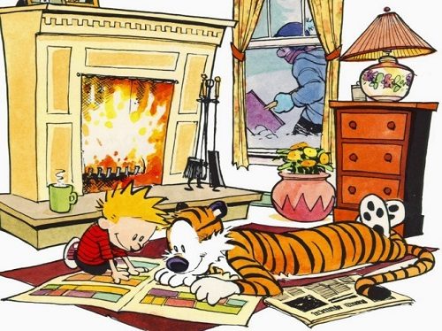
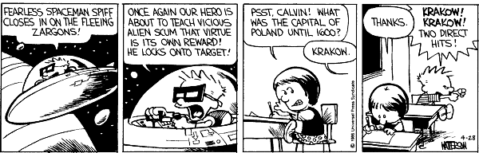
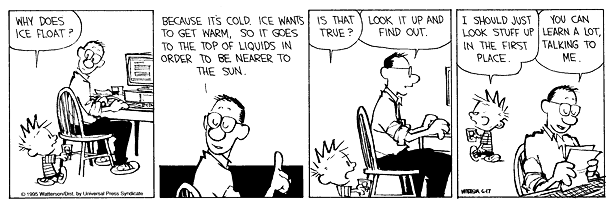
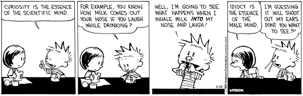
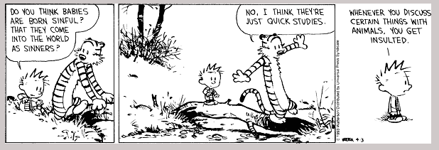
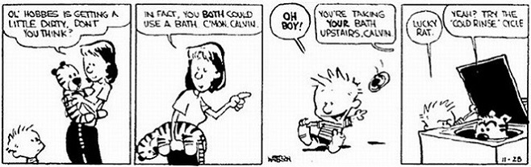
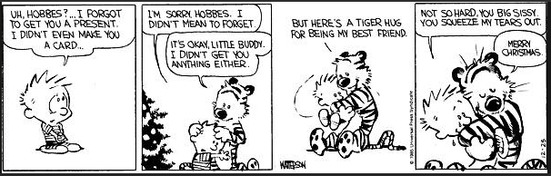

Management lessons that children teach us

Surbhi has about 19 years of experience in the content services space across roles such as editing, writing, website content management, instructional design, technical writing, project management, and resource management.
Surbhi loves to play with words.
Surbhi Chattkara
The Child is the Father of the Man, said William Wordsworth. These words have been interpreted variously by scholars and literary critics but I realised a very different meaning of these words during the last five years, as a mother.
While I taught my daughter how to brush her teeth, wield a spoon, read a book, and many other things, I learnt quite a few things from her that helped me at work. Of course, she didn't know that mumma was her student!
To read about each of these lessons, move the cursor over the boxes.
Focus on the current task

Multitasking is not about thinking of one task while performing another. Multitasking is about being able to manage multiple tasks at the same time. And children show you why we weren't meant to multitask. We know that when we try to focus our attention on two things, each task can only get half the attention it would otherwise get. Children teach you how to focus on the current task, finish it, and then quickly move on to the next task. And that is how children play with 10 toys in a span of 20 minutes.
Use your imagination

Einstein said, "Logic will get you from A to B. Imagination will take you everywhere." Children can spend hours with just one block of anything and their imagination. They do not need a lot of toys to play with. Anything can become a fascinating toy. Even the imaginary. In other words, they do not think about hurdles (read, toys that would be perfect to play). They find solutions (read, use their imagination to create a toy out of anything that is available). So unless you wanted to get to B, learn to exercise your imagination! Worst case scenario, you'll at least have one tiny attendee as part of a believing audience.
Learn from others

Have you seen how monkeys interact with one another? If you observe carefully, you'll see why teachers call some children 'little monkeys'. Children listen, observe, and imitate behaviour. While this has its own problems, there is a lot we can learn from observing and listening to others. A colleague who writes very clear emails, a colleague who's awesome at organising events, a colleague who's well read and up-to-date about new tools on the internet, a colleague who juggles time really well — these are all opportunities to learn from others. We just have to acknowledge, observe, and learn.
Be curious

You do not need to be a parent to know that being with a child means answering an ongoing series of 'Why' questions. From dawn to dusk. Why should I put my toys back? Why should I eat carrots? Why has that friend of mine not come to the park today? Why does it work like this? The list is endless. These questions can take a toll on your patience and time and, more often than not, you want to say "Because I said so!" However, the time spent in explaining some of those Whys is well worth the effort. At work, if you try to answer the Whys that your colleagues ask you, you are likely to get more interest and co-operation because people would now understand the objective. Sometimes, it might help you understand the objective a little better as well!
Appreciate diversity
One thing I learned as a parent is that each child is different and each is special because she is not like the other. If we appreciate the fact that each of our colleagues is different and learn to appreciate this difference, we would approach our colleagues in a more sensitive and effective manner. This is pretty much the way we operate at home. We approach our children differently because we understand that each child is different and we are more prepared to try different things.
Be honest

Ask a child a question, and you'll get a honest answer. The child does not know how to tell you anything else! A while ago, one of my friends was suffering from a skin allergy, and was seeking the advice of her other friends. In walks a 5 year old. While the others are standing around voicing their concern to the affected person, there's a small voice that says "See aunty, this is what happens if you don't take a bath."
Now, is honesty a good thing? Let's not ask that particular aunty for now!
Courage

Most children speak what comes to their mind, before 'school' happens to them. As they become adults, they forget what they were like at school. Now they don't even speak up when given an opportunity! And then they complain about not being given a voice. Listen to your heart, be courageous and speak your mind! See the previous lesson. Even aunty will agree with you on this one.
The lesser known F words - Forgive and Forget

How often have you woken up to a child who is still upset with you about what happened last night? The younger children forget things the next moment. Is this really the same child who was bawling just a while ago, after falling down? See how quickly they are smiling again. (Even though they walk with a limp for a while!) Children teach you that it's not worth it to carry baggage. Baggage that you can easily dump. And become child-like again.
I continue to learn from children every single day because as a saying goes, "There are no seven wonders of the world in the eyes of a child. There are seven million."
Related
- Read Asha Mokashi's views on leadership: No passengers on the battleship.
- Read Vinish Garg's take on branding and storytelling: Be your own story.
Acknowledgements
The pictures are from the Calvin and Hobbes series and used here under Fair Use policy for educational purposes. They've been sourced from the internet as under:
- Focus on the current task: http://www.ongratitude.net/2013/12/day-33-calvin-hobbes-exploring-and.html
- Use your imagination: http://goodcomics.comicbookresources.com/2007/08/02/365-reasons-to-love-comics-214/
- Learn from others: http://www.s-anand.net/blog/calvin-and-hobbes-dad-explains-science/
- Be curious: http://www.gocomics.com/calvinandhobbes/2013/04/26
- Appreciate diversity: http://kbrucommunications.com/kenyon-college-commencement-by-bill-watterson/
- Be honest: http://trentdejong.com/category/why-i-am-not-a-liberal-or-conservative/
- Courage: http://goodcomics.comicbookresources.com/2007/08/02/365-reasons-to-love-comics-214/
- Forgive and forget: http://imgur.com/gallery/PbbWS